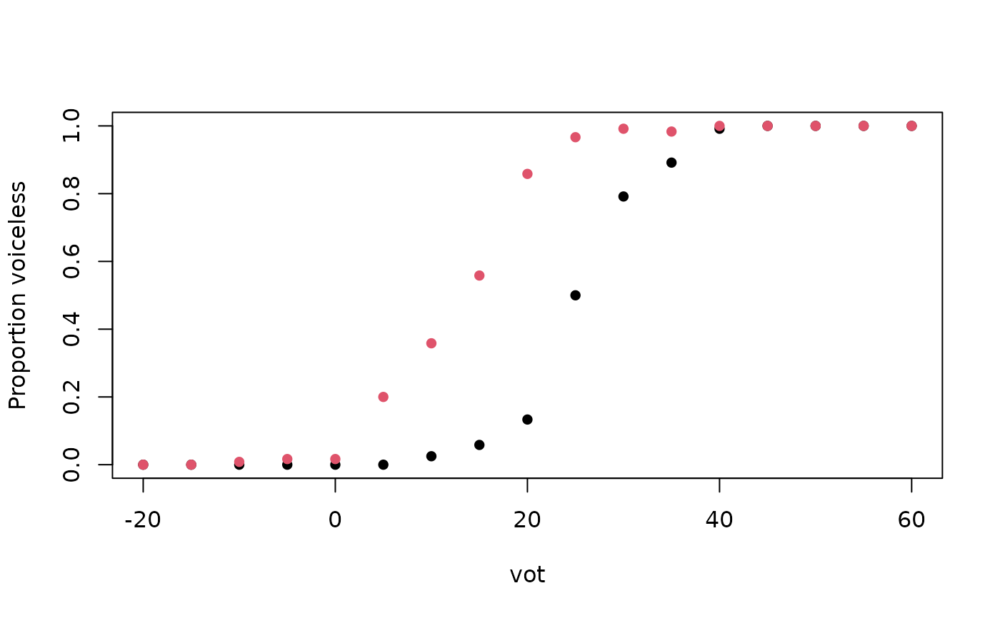

12 English and 12 Spanish listeners label synthetic stop-vowel syllables as voiced or voiceless. Voice onset time (VOT) runs from -20 to +60 ms in 5 ms steps for labial, apical and velar stops, and each step is heard 10 times. The proportion of voiceless responses follows an S-shaped curve along the continuum. The category boundary lies at a longer VOT for apicals than for labials, and longer again for velars. Spanish listeners place it at a shorter VOT than English listeners. For logistic regression on binomial counts and for estimating category boundaries.
Format
A tibble with 1224 rows and 6 columns:
- listener
Listener ID,
En01toEn12andSp01toSp12.- language
Native language,
"English"or"Spanish".- place
Place of articulation:
"labial","apical"or"velar".- vot
Voice onset time of the stimulus in ms.
- trials
Number of presentations, always 10.
- voiceless
Number of voiceless responses.
Details
True model: the probability of a voiceless response is
plogis(slope * (vot - boundary - b0)). The boundaries are the 50%
crossover points reported by Abramson and Lisker (1973), who give the
English values from Lisker and Abramson (1970): 25, 35 and 42 ms for
English and 14, 22 and 24 ms for Spanish labials, apicals and velars.
Each listener's boundary is shifted by b0 (SD 4 ms), and slopes are
log-normal around 0.3 per ms (SD 0.25 on the log scale). Listeners and
responses are simulated.
References
Abramson, A. S. & Lisker, L. (1973). Voice-timing perception in Spanish word-initial stops. Journal of Phonetics, 1(1), 1-8. doi:10.1016/S0095-4470(19)31372-5
Lisker, L. & Abramson, A. S. (1970). The voicing dimension: Some experiments in comparative phonetics. In Proceedings of the 6th International Congress of Phonetic Sciences, Prague 1967 (pp. 563-567).
Examples
labial <- subset(vot_identification, place == "labial")
p <- aggregate(cbind(voiceless, trials) ~ language + vot, data = labial, FUN = sum)
plot(voiceless / trials ~ vot, data = p, col = as.integer(language), pch = 16,
ylab = "Proportion voiceless")

cells <- split(vot_identification, vot_identification[c("language", "place")])
sapply(cells, function(x) {
b <- coef(glm(cbind(voiceless, trials - voiceless) ~ vot, data = x, family = binomial))
round(-b[[1]] / b[[2]], 1)
})
#> English.labial Spanish.labial English.apical Spanish.apical English.velar
#> 25.5 12.7 35.3 21.3 42.6
#> Spanish.velar
#> 23.0
m <- glm(cbind(voiceless, trials - voiceless) ~ vot + language * place,
data = vot_identification, family = binomial)
round(coef(m), 2)
#> (Intercept) vot
#> -6.24 0.24
#> languageSpanish placeapical
#> 3.14 -2.37
#> placevelar languageSpanish:placeapical
#> -4.17 0.27
#> languageSpanish:placevelar
#> 1.67